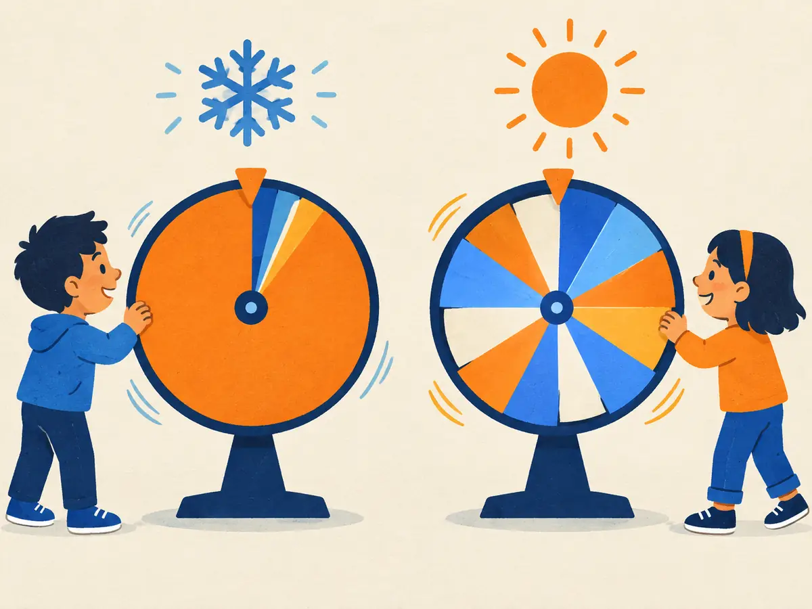

KV cache & sampling
A trained transformer only ever predicts one next token. Writing a whole answer means running it in a loop. This lesson covers the two things that make that loop work in practice: the KV cache, which stops it redoing old work, and sampling, which decides which token to actually pick.
By the end you can
- Explain why caching keys and values turns quadratic recomputation into linear work per token.
- Compute a model's KV-cache memory from its config.
- Predict what greedy decoding, temperature, top-k and top-p do to the next-token distribution.
Guess first, then check as you read.
A model generates 1,000 tokens one at a time and, at every step, reruns itself on everything so far. Roughly how many token-passes through the model is that?
- About 1,000
- About 500,000
- About 1,000,000,000
- Exactly 1
What happens to sampling as the temperature goes towards 0?
- Every token becomes equally likely
- The model stops generating
- Rare tokens become more likely
- It always picks the single most likely token (greedy)
The generation loop
Generation is autoregressive: each new token is fed back in as input for the next one.
- Run the model on the prompt. Take the logits at the last position.
- Turn them into probabilities and choose a token (more on choosing below).
- Append it to the sequence. Stop if it's an end-of-sequence token or a length limit is hit; otherwise go back to step 1.
Done naively, step 1 reprocesses the whole sequence every time. To produce token $t$ you push $t$ tokens through every layer, even though only the last position's output is used. Over $n$ generated tokens that's $1 + 2 + \dots + n \approx n^2/2$ token-passes.
The KV cache
Here's the key fact: in a causal model, token $i$'s hidden state in every layer depends only on tokens $1 \dots i$. Appending token $i+1$ changes nothing about earlier positions, so their keys and values in every layer stay exactly the same. So store them:
- Prefill: process the whole prompt in one parallel pass (like training) and save every layer's $K$ and $V$.
- Decode: each step feeds in only the newest token. In each layer it computes that token's $q$, $k$, $v$, appends $k$ and $v$ to the cache, and attends with $q$ over all cached keys.
The MLPs and projections now process one token per step instead of $t$. Attention still reads all $t$ cached keys, so its per-step cost grows with length, but the giant recomputation is gone. Queries are never cached: only the newest token's query is ever needed.
The two phases behave differently on hardware. Prefill does lots of math on many tokens at once (compute-bound). Decode does little math per step but must read the weights and the whole cache from memory every step (memory-bandwidth-bound). Serving metrics like time-to-first-token vs time-per-token come from this split (M5.6).
Explain like I'm 5: the KV cache
You're writing a long story, one word at a time. Before each new word you could reread the whole giant book you've written so far. That gets slower with every page.
Instead, you keep a little stack of notes: one card per word, saying what it was about. For each new word you just glance at the cards, and add one new card.
Where it breaks: the stack isn't little. Real models keep one card per word per layer and per KV head, and that pile can outgrow the model itself.
How big is the cache?
For every token, each layer stores one key and one value vector per KV head:
$$\text{KV bytes} = 2 \times L \times n_{\text{kv}} \times d_{\text{head}} \times n_{\text{tokens}} \times b$$- $2$: one key and one value.
- $L$: number of layers. $n_{\text{kv}}$: number of key/value heads (equal to the query heads for standard attention, fewer with GQA or MQA, M1.2).
- $d_{\text{head}}$: size of each head. $n_{\text{tokens}}$: tokens in the sequence. $b$: bytes per number (2 for 16-bit).
Multiply by the batch size when serving many sequences at once.
Worked example
Llama 2 7B: $L = 32$ layers, 32 KV heads (no GQA), $d_{\text{head}} = 128$, 16-bit numbers, a full 4,096-token context.
- Per token: $2 \times 32 \times 32 \times 128 \times 2 = 524{,}288$ bytes $= 512$ KiB.
- Per sequence: $524{,}288 \times 4{,}096 = 2{,}147{,}483{,}648$ bytes $= 2$ GiB.
- Batch of 16 sequences: 32 GiB of cache, more than double the ≈13.5 GB of weights. At serving time, memory for the cache, not for the weights, often limits how many users fit on a GPU.
Llama 3.1 8B: $L = 32$, GQA with $n_{\text{kv}} = 8$ (and 32 query heads), $d_{\text{head}} = 128$, 16-bit.
- KV cache per token, in KiB:
- For one 8,192-token sequence, in GiB:
- At its full 128K (131,072-token) context, in GiB:
- How many times bigger would the cache be with all 32 heads as KV heads?
Because the cache is so large, a lot of serving engineering targets it: GQA/MQA shrink $n_{\text{kv}}$, PagedAttention stores it in fixed-size blocks to avoid wasted memory (M5.4), and caches are often quantized to 8 bits or fewer (M5.1).
Choosing the next token
The model hands you logits $z_1, \dots, z_V$, one per vocabulary token. How you turn them into a choice, the decoding strategy, changes the text a lot.
- Greedy: always take the most likely token, $\arg\max_i z_i$. Deterministic and fine for short factual answers, but on open-ended text it tends to get bland and stuck in repetitive loops.
- Sampling: draw a token at random from the softmax distribution. More varied, but the long tail of individually unlikely tokens adds up, and one bad draw can derail the text.
Three knobs reshape the distribution before sampling:
$$p_i = \frac{e^{z_i / T}}{\sum_j e^{z_j / T}}$$- Temperature $T$: divides every logit before the softmax. $T = 1$ leaves the model's distribution unchanged; $T < 1$ sharpens it toward the top token ($T \to 0$ is greedy); $T > 1$ flattens it toward uniform.
- Top-k (Fan et al., 2018): keep only the $k$ most likely tokens, set the rest to 0 and renormalize.
- Top-p, or nucleus sampling (Holtzman et al., 2020, “The Curious Case of Neural Text Degeneration”): keep the smallest set of top tokens whose probabilities add up to at least $p$, then renormalize. Unlike a fixed $k$, the set shrinks when the model is confident and grows when it isn't.
Common libraries apply them in that order: temperature, then top-k, then top-p. A newer variant, min-p sampling, keeps tokens whose probability is at least a fraction of the top token's.
Explain like I'm 5: temperature

The model spins a prize wheel to pick each word. Every word gets a slice; likely words get bigger slices.
Turn the temperature down (the snowflake) and the favourite's slice swells until it fills almost the whole wheel: you nearly always land on it. Turn it up (the sun) and the slices even out, so surprising words come up often.
Where it breaks: temperature never adds new words or changes their order; it only makes the existing slices more or less equal. Top-k and top-p are like cutting the smallest slices off the wheel.
Try it: temperature, top-k and top-p
Illustrative logits for the token after “I sat by the river”. Grey shows each token's probability after temperature but before cutting; coloured bars are what you actually sample from. Try a low temperature, then a high one, then high temperature with top-p 0.9.
Worked example
Three candidates with logits bank $= 2$, side $= 1$, and $= 0$.
- $T = 1$: $e^2, e^1, e^0 \approx 7.39, 2.72, 1$; the sum is $11.11$, so $p \approx [0.665,\ 0.245,\ 0.090]$.
- $T = 0.5$: logits become $[4, 2, 0]$: $p \approx [0.867,\ 0.117,\ 0.016]$. Sharper.
- $T = 2$: logits become $[1, 0.5, 0]$: $p \approx [0.506,\ 0.307,\ 0.186]$. Flatter.
- Top-p $= 0.9$ at $T = 1$: $0.665 < 0.9$, but $0.665 + 0.245 = 0.910 \ge 0.9$, so keep {bank, side} and renormalize: $[0.731,\ 0.269,\ 0]$.
Now the logits are $\ln 6, \ln 3, \ln 1$, so at $T = 1$ the probabilities are exactly $[0.6,\ 0.3,\ 0.1]$.
- With top-p $= 0.8$, how many tokens are kept?
- After renormalizing, the top token's probability is
- Instead use $T = 0.5$ (no top-p). Dividing by 0.5 doubles each logit, which squares each $e^{z}$: $36, 9, 1$. Top token probability:
- $T = 0.5$ and then top-p $= 0.8$: the top token's final probability is
Repetition and other failure modes
Holtzman et al. (2020) showed that the most-likely continuations (greedy decoding, or beam search, which tracks several high-probability candidates) of open-ended text are often dull and repetitive: once a phrase repeats, repeating it again becomes even more likely, and the model gets stuck in a loop. Pure sampling avoids loops but wanders into incoherence through the low-probability tail. Truncating the tail with top-p was their fix.
Other common patches work on the logits directly: a repetition penalty (introduced with CTRL, Keskar et al., 2019) down-weights tokens that already appeared, and API-style frequency and presence penalties subtract from the logits of tokens by how often, or whether, they've been used. These are blunt tools: penalize too hard and the model avoids words it legitimately needs, like “the” or a variable name in code.
Explain to a friend why a KV cache works, what it costs, and what temperature and top-p each do.
Why is it safe to reuse cached keys and values from earlier steps?
- Keys and values are fixed parameters learned in training
- The cache is recomputed in the background anyway
- With a causal mask, earlier tokens never attend to later ones, so their keys and values in every layer can't change
- Only the first layer has keys and values
A model switches from 32 KV heads to GQA with 8 KV heads (M1.2), all else equal. Its KV cache…
- shrinks to a quarter
- stays the same, because the query heads didn't change
- shrinks to a thirty-second
- doubles
Probabilities are [0.5, 0.3, 0.15, 0.05]. With top-p = 0.9, which tokens remain?
- Only the first
- The first three
- The first two
- All four
Raising the temperature from 1 to 2 does what to the next-token distribution?
- Changes which token is most likely
- Makes it more peaked on the top token
- Removes low-probability tokens
- Flattens it, so less likely tokens are sampled more often, while keeping the ranking
Key takeaways
- Generation is a loop: predict from the last position, choose a token, append, repeat.
- Causality means old keys and values never change, so the KV cache makes each decode step process just one new token: ~$n$ instead of ~$n^2/2$ token-passes.
- Cache size $= 2 \times L \times n_{\text{kv}} \times d_{\text{head}} \times n_{\text{tokens}} \times b$; Llama 2 7B needs 2 GiB per 4,096-token sequence.
- Temperature sharpens or flattens; top-k keeps $k$ tokens; top-p keeps the smallest set reaching probability $p$.
- Greedy decoding tends to repeat; sampling with truncation and mild penalties is the usual fix.
Build a tiny NumPy transformer, add a KV cache and prove it gives exactly the same tokens as recomputing, time the speed-up, compute real cache sizes, and implement temperature, top-k and top-p sampling. About 30 minutes, free, runs in your browser.
Add this lesson's cards to your spaced-review deck.